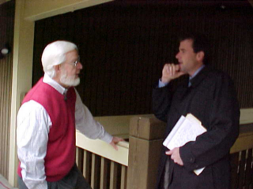
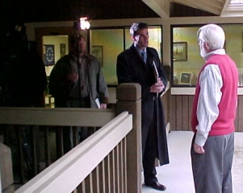

Center
for the Defense of Free Enterprise
Center
for the Defense of Free Enterprise
Ron Arnold
HOME ISSUES OPPOSITION PROJECTS DEFENDERS WISE USE BOOKSTORE ARCHIVE
|
Ron Arnold |
|
HOME ISSUES OPPOSITION PROJECTS DEFENDERS WISE USE BOOKSTORE ARCHIVE |
|
Reporters seek out the Center for the Defense of Free Enterprise because they know they can trust us to be honest, to be authoritative, and to make even the most complicated ideas clear and compelling. The Fox News report, Spotted Owls Endangered by Logging or Nature? is a good example of how the Center keeps its media profile high. Here's the inside story behind the story. |
|
 Fox News reporter Dan Springer sensed a news story when reports emerged that it was not loggers that were reducing the Northern Spotted Owl population in the Pacific Northwest, but the barred owl invading the spotted owl's territory.This embarrassing discovery suggested that the timber wars of the 1980s had needlessly destroyed the jobs of over 22,000 timber workers. Dan got out his Rolodex and went to work. Among the key people he called was the Center's Ron Arnold (left), who Dan knew to have long experience in the issue. |
|
 When Ron agreed to appear in the Fox News report, Dan Springer brought his news crew to the Bellevue, Washington national headquarters of the Center for the Defense of Free Enterprise for the interview.Producer Robert Shaffer and camera operator Charles Stewart quickly set things up. Like all good reporters, Dan does not give out interview questions in advance - just a basic outline of what the story is about. He counts on direct and probing enquiry to produce fresh and spontaneous comment. |
 Ron
Arnold is known in the business as a "good interview," someone who can give
thoughtful answers in short, snappy and even sassy sound bites. Ron
Arnold is known in the business as a "good interview," someone who can give
thoughtful answers in short, snappy and even sassy sound bites.A critic dubbed Ron "a master of the incendiary sound bite" after being scorched by one of them. Dan Springer and his veteran news crew took a look at the Center's woodland setting in Bellevue, Washington, and decided to shoot outside. With good reason: The Center's office sits amidst a dozen 80-foot Douglas fir trees that are carefully protected in their Liberty Park complex. |
 So,
what the viewer saw on the screen - an interview in a forest background for a
spotted owl / timber wars story - was not staged in some remote site gimmicked
up just to look good. So,
what the viewer saw on the screen - an interview in a forest background for a
spotted owl / timber wars story - was not staged in some remote site gimmicked
up just to look good.The Fox News story was shot right outside Ron's office door. And incidentally, Ron's home, less than a mile from his office, also sits among a dozen 80-foot Douglas fir trees on Wilburton Hill, a site that was totally clearcut by loggers in the early 20th century. Photos by executive assistant Tiffany Lindsey. |
RETURN TO CENTER FOR THE DEFENSE OF FREE ENTERPRISE HOME PAGE

{kind=link}